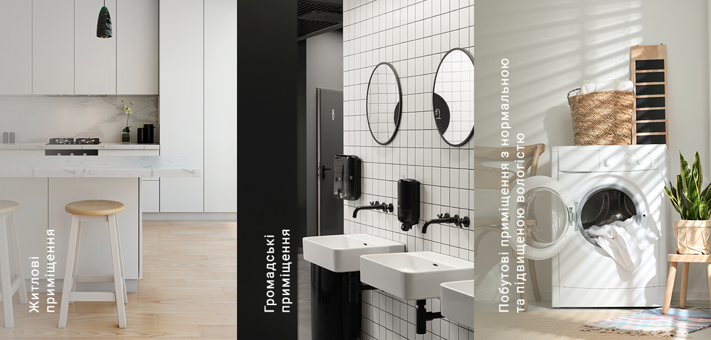

Вентс Ейс
Тихий, продуктивний і енергоефективний

Підходить для встановлення
разом із декоративними панелями системи
Design Concept
Тихий, продуктивний
і енергоефективний вентилятор
Вентс Ейс личитиме будь-якому
інтер’єру, а також ефективно
видалятиме забруднене повітря,
не заважаючи своєю роботою

Про систему Design Concept
Cистема Design Concept — це дизайнерське рішення оформлення вентиляції, що складається з бази (вентилятор, решітка або дифузор) та низки стильних панелей із різноманіттям матеріалів, кольорів та фактур, що підходять до бази.
Тепер вентиляція не лише ефективна, а й відмінно вписується в дизайн приміщення.

Особливості вентилятора

Висока продуктивність і безшумність
Максимальна витрата повітря в поєднанні з низьким рівнем шуму забезпечується завдяки спеціальній крильчатці, що має аеродинамічну форму, та унікальній конструкції двигуна на гумовій віброгасній вставці. Вихідний патрубок вентилятора оснащений спеціальними випрямлячами потоку повітря, які знижують турбулентність, збільшують напір повітря та сприяють зниженню рівня шуму.
Надійність
Двигун обладнаний захистом від перегрівання й не потребує технічного обслуговування протягом усього періоду експлуатації.
Крильчатка і корпус вентилятора виготовлені з високоякісного та міцного АБС-пластику, стійкого до впливу ультрафіолету.
Універсальність використання
Вентилятор розрахований на безперервну та періодичну роботу.
Може кріпитися до стіни, повітропроводів або у вентиляційні шахти.
Використання
Модифікації
Ейс К
Вентилятор обладнаний зворотним клапаном, що запобігає можливим тепловтратам і перешкоджає зворотному руху повітря до приміщення, коли вентилятор вимкнений.

Ейс Л
Вентилятор обладнаний кулькопідшипниковим двигуном. Підшипники не потребують обслуговування і мають запас мастильного матеріалу, достатній для всього періоду експлуатації двигуна. Також використання такого двигуна дозволяє монтувати вентилятор під будь-яким кутом.
Ейс Т
Обладнаний регульованим таймером затримки вимкнення. Таймер дозволяє продовжувати роботу вентилятора від 2 до 30 хвилин після зупинення вимикачем. Завдяки цьому вдається зменшити вологість і видалити небажані запахи.

Ейс TH
Обладнаний регульованим таймером затримки вимкнення і датчиком вологості. Вбудований датчик вологості контролює роботу вентилятора, відштовхуючись від рівня вологості у приміщенні. У разі перевищення встановленого рівня вологості вентилятор автоматично вмикається і працює до нормалізації рівня вологості. При досягненні нормального рівня вентилятор допрацьовує встановлений на таймері час і вимикається.

Ейс В
Вентилятор зі шнурковим вимикачем для ручного ввімкнення та вимкнення.
Ейс ВТ
Вентилятор оснащений таймером затримки вимкнення та шнурковим вимикачем. Вбудований таймер затримки вимкнення дозволяє продовжувати роботу вентилятора від 2 до 30 хв після зупинення вимикачем. Завдяки цьому вдається видалити вологу та небажані запахи.
Ейс ВТН
Обладнаний шнурковим вимикачем, регульованим таймером затримки вимкнення, а також датчиком вологості. Запуск вентилятора може здійснюватися за допомогою шнуркового вимикача або автоматично після спрацьовування датчика вологості. При досягненні заданого рівня вологості починає роботу вбудований датчик затримки вимкнення.
Ейс 12
Вентилятор обладнаний двигуном із низькою напругою (12 В), що робить можливим безпечне використання вентилятора в приміщеннях із підвищеною вологістю, а також у місцях із ймовірністю прямого потрапляння води (у ванних кімнатах, саунах тощо).

Модельний ряд
| Модель | Ø, мм | м3/год | дБА | Двигун на підшипниках |
Таймер | Датчик вологості |
|---|---|---|---|---|---|---|
| Вентс 100 Ейс | 100 | 90 | 29 | |||
| Вентс 125 Ейс | 125 | 160 | 32 | |||
| Вентс 100 Ейс Т | 100 | 90 | 29 | ✔ | ||
| Вентс 100 Ейс ТН | 100 | 160 | 29 | ✔ | ✔ | |
| Вентс 125 Ейс Т | 125 | 160 | 32 | ✔ | ||
| Вентс 125 Ейс ТН | 125 | 160 | 32 | ✔ | ✔ | |
| Вентс 100 Ейс Л | 100 | 90 | 29 | ✔ | ||
| Вентс 125 Ейс Л | 125 | 160 | 32 | ✔ | ||
| Вентс 100 Ейс Т Л | 100 | 90 | 29 | ✔ | ✔ | |
| Вентс 125 Ейс Т Л | 125 | 160 | 32 | ✔ | ✔ | |
| Вентс 100 Ейс ТН Л | 100 | 90 | 29 | ✔ | ✔ | ✔ |
| Вентс 125 Ейс ТН Л | 125 | 160 | 32 | ✔ | ✔ | ✔ |